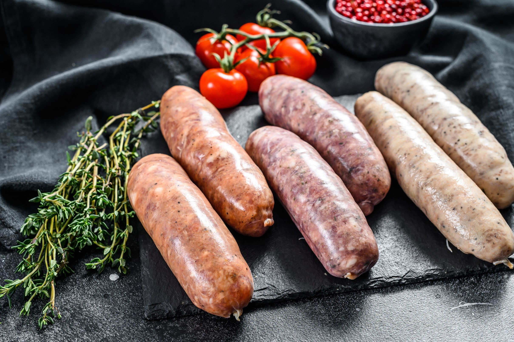
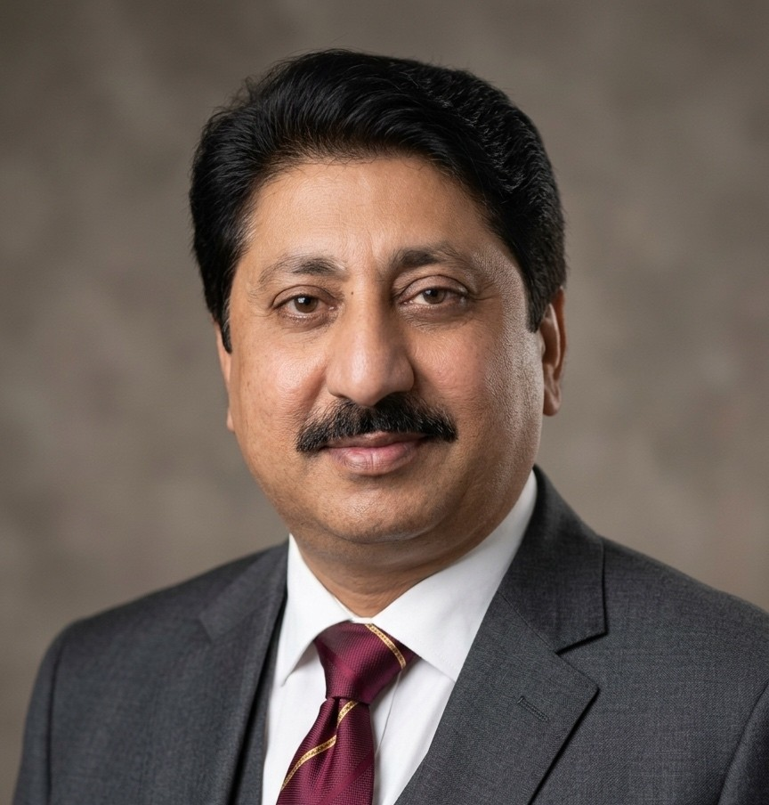

PAKCO INTERNATIONAL
The right choice of Quality

The right choice of Quality
PAKCO International was founded with a clear mission: to bring a modern, tech-forward approach to the traditional sheep casing industry.We have emerged as a dynamic player in the global market, driven by a commitment to transparency, speed, and uncompromising hygiene. While we are a young company, our team brings together specialized expertise in natural casing processing. By utilizing the latest calibration technology and strict quality controls, we provide the global meat industry with sheep casings that offer the perfect "snap" and superior durability. We aren't just a supplier; we are your modern partner in culinary excellence.

Muhammad Arslan is the CEO of PAKCO International, a premier exporter specializing in high-quality natural sheep casings. With a deep focus on food safety, international hygiene standards, and sustainable sourcing, he has led the company to become a trusted partner for meat processors and sausage manufacturers worldwide. Under his vision, PAKCO International continues to expand its global footprint while maintaining the traditional quality that defines the industry.
C.E.O : Muhammad Arslan
Mobile+ 92 300 1700731
Muhammad Hassnain serves as the Managing Director of PAKCO International. With extensive expertise in the logistics and technical aspects of the sheep casing industry, he oversees the company’s core operations and international trade relations. His leadership ensures that PAKCO International remains a reliable link in the global food supply chain, known for meticulous quality grading and efficient service.
Managing Director : Muhammad Hassnain
Mobile+ 92 300 1700731
Email info@pakcointernational.com

Fayyaz Ahmed serves as the Production Manager at PAKCO International with 30 years of experience . With deep technical knowledge of natural casing processing, he manages the end-to-end production cycle—from sourcing and cleaning to grading and packaging. His commitment to rigorous quality assurance ensures that every product leaving the PAKCO facility exceeds international food safety regulations.
Production Manager : Fayyaz Ahmed
Mobile+ 92 300 1700731
Email info@pakcointernational.com